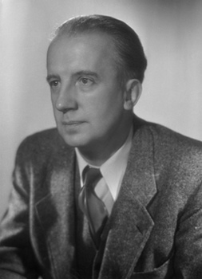

Paul Eluard – Les Mots pour la Liberté
Par Quentin Boucher Juhens et Saïd-Hakim HachimPublié le 06 novembre 2023 à 14h45, Lecture, 5 min.
Table des matières:
Qui est Paul Eluard ?

Paul Eluard, (1895 – 1952). 1945. 49, avenue d’Iéna. 75016 Paris Droits : Etat Grindel Eugène, Eluard Paul (dit). (C) Grindel-Boaretto Cécile (C) Ministère de la Culture – Médiathèque de l’Architecture et du Patrimoine. Dist. RMN / Studio Harcourt |
Eugène Grindel (1895-1952), mieux connu sous le nom de Paul Éluard, était un poète surréaliste français. Né en Seine-Saint-Denis, près de Paris, il a été profondément marqué par les événements de la Première Guerre mondiale, ce qui a renforcé son désir de justice et de paix. En 1916, il choisit le nom de plume "Paul Éluard" pour publier ses poèmes et défendre ses convictions. Il s’est engagé pour défendre ses idéaux et a contribué à façonner le mouvement du surréalisme aux côtés d’autre artistes renommés. Son recueil "Capitale de la douleur" (1926) reflète son exploration poétique entre les deux guerres en mettant en avant ses réflexions sur la condition de l’être humain. Pendant la Seconde Guerre mondiale, il est devenu un symbole de résistance et de défense des droits fondamentaux grâce à son poème "Liberté" (1942). Son engagement en faveur de la liberté et de la justice a fait de lui une icône littéraire et politique, dont l’influence perdure jusqu’à aujourd’hui. |
Pour quels droits et libertés s’est-il battu ?
Pendant l'entre-deux-guerres, Paul Éluard s'est fortement impliqué dans les mouvements artistiques et politiques de son époque, préparant ainsi le terrain pour son engagement ultérieur pendant la Seconde Guerre mondiale. Il a été un membre actif du mouvement surréaliste aux côtés d'André Breton et Salvador Dalí, contribuant à la création d'une poésie nouvelle, influencée par les rêves, l'automatisme et l'inconscient. Son recueil "Capitale de la douleur" (1926) est un exemple marquant de son exploration poétique et de sa réflexion sur la condition humaine.
Sur le plan politique, Éluard a adhéré au Parti communiste français en 1927, motivé par ses convictions en faveur de la justice sociale. Ses activités politiques et son engagement idéologique ont marqué sa poésie de cette période. Il a également voyagé en Espagne pendant la guerre civile espagnole (1936-1939) et a soutenu activement la cause républicaine. Ses écrits ont été des appels à la solidarité internationale et à la défense de la liberté.
Ces expériences et engagements de l'entre-deux-guerres ont préparé Paul Éluard à devenir un ardent défenseur des droits de l'homme et de la liberté lors de la Seconde Guerre mondiale. Il a rejoint la Résistance française, utilisant sa poésie comme une arme puissante pour galvaniser les esprits et encourager la lutte. Son poème emblématique "Liberté," écrit en 1942, est devenu un cri de ralliement pour tous ceux qui aspiraient à la liberté et à la justice. Éluard y exprimait un profond désir de voir les peuples libérés de l'oppression, de vivre dans un monde d'égalité et de dignité humaine. Au-delà de son poème "Liberté," Paul Éluard a été un fervent opposant à l'antisémitisme et a dénoncé publiquement les atrocités commises par les nazis. Son engagement en faveur des droits de l'homme, de la tolérance et de la liberté d'expression a eu un impact profond sur la société de son époque et continue d'inspirer les générations futures. Paul Éluard demeure un exemple remarquable de la manière dont la poésie peut être un instrument de résistance contre l'oppression et un véhicule puissant pour promouvoir la liberté et les droits fondamentaux.